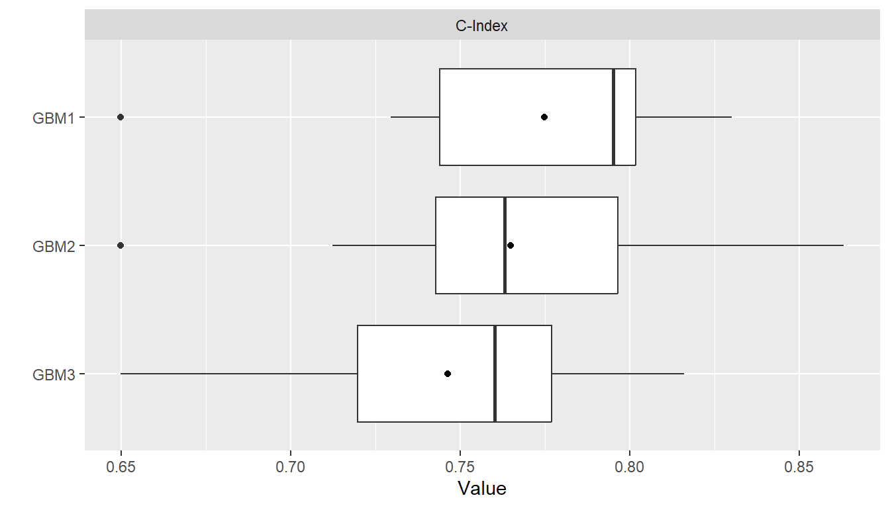
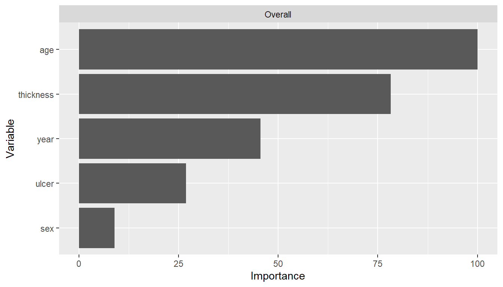
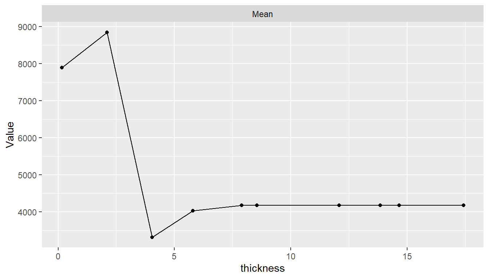
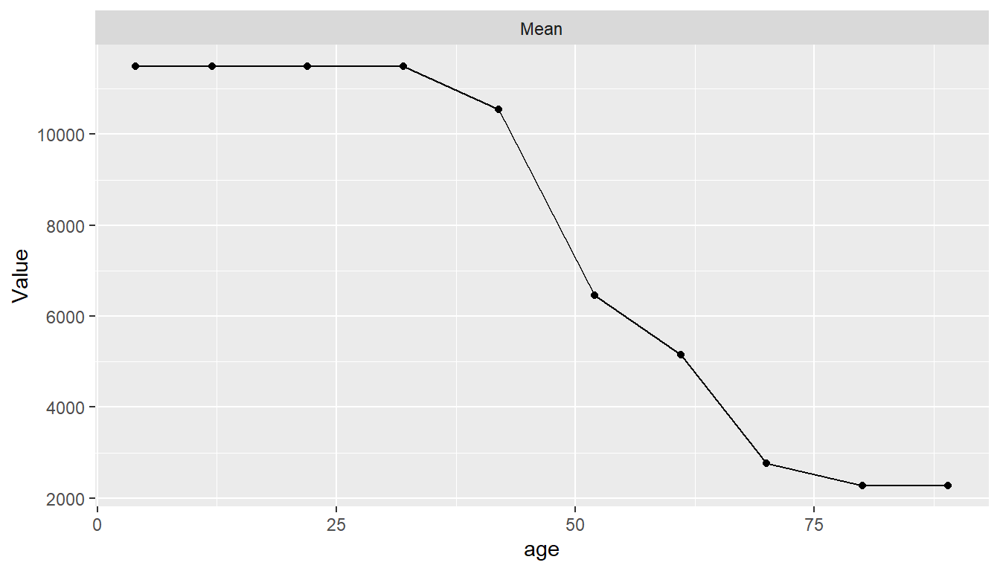
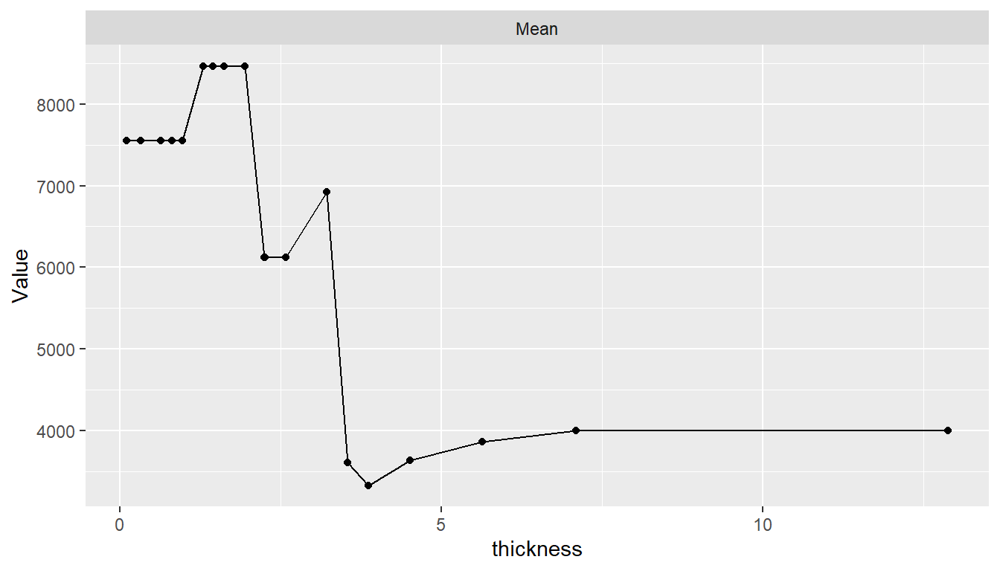
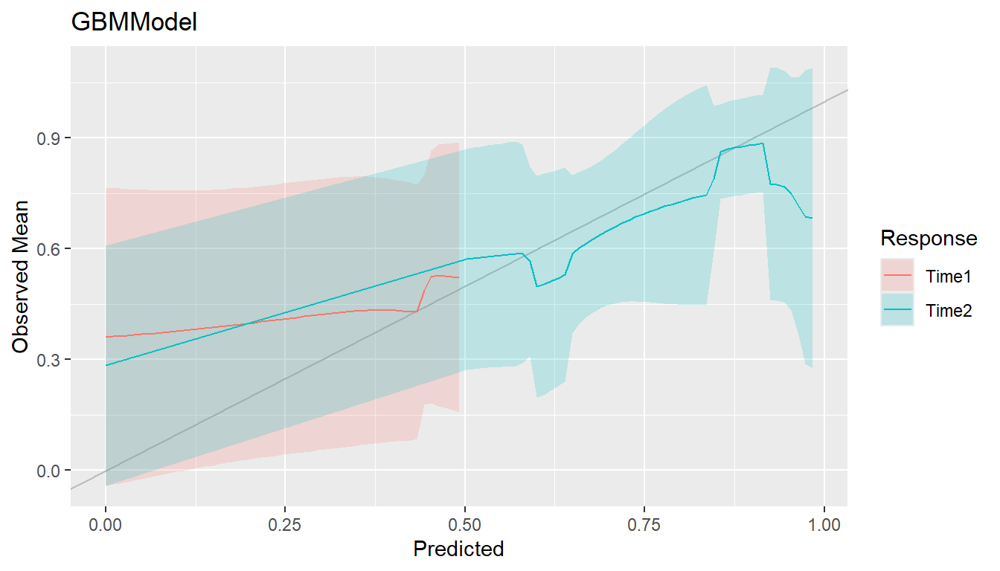
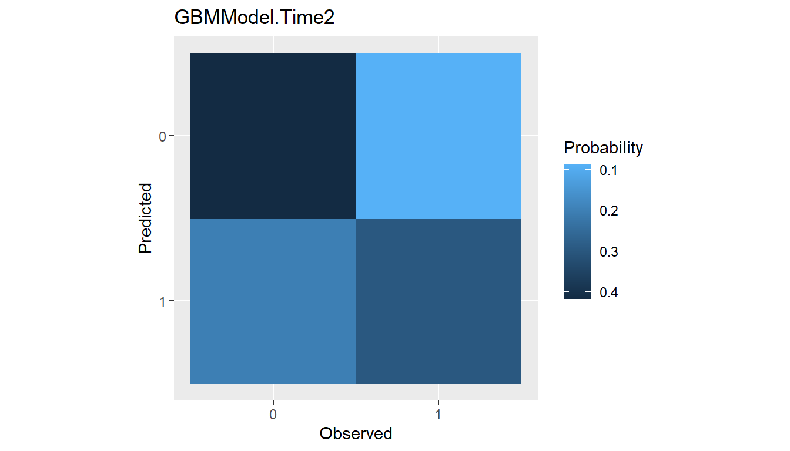
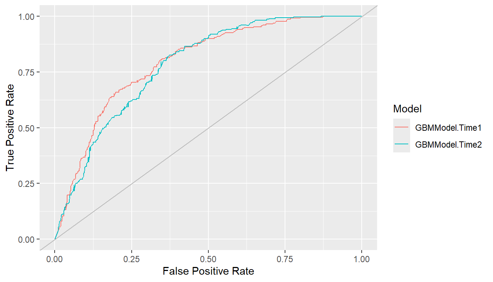

Using MachineShop
Melanoma Example
Use of the MachineShop package is demonstrated with a survival analysis example in which the response variable is a censored time to event outcome. Since survival outcomes are a combination of numerical (time to event) and categorical (event) variables, package features for both variable types are illustrated with the example. Support for outcomes other than survival, including nominal and ordinal factors as well as numeric vectors and matrices, is also discussed.
Survival analysis is performed with the Melanoma dataset from the MASS package (Andersen et al. 1993). This dataset provides survival time, in days, from disease treatment to (1) death from disease, (2) alive at study termination, or (3) death from other causes for 205 Denmark patients with malignant melanomas. Also provided are potential predictors of the survival outcomes. The analysis begins by loading required packages MachineShop, survival (Therneau 2020), and MASS as well as magrittr (Bache and Wickham 2014) for its pipe (%>%) operator to simplify some of the code syntax. For the analysis, a binary overall survival outcome is created by combining the two death categories (1 and 3) into one.
## Analysis libraries and dataset
library(MachineShop)
library(survival)
library(magrittr)
data(Melanoma, package = "MASS")
## Malignant melanoma analysis dataset
surv_df <- within(Melanoma, status <- as.numeric(status != 2))Descriptive summaries of the study variables are given below in Table 1, followed by a plot of estimated overall survival probabilities and 95% confidence intervals.
| Characteristic | Value |
|---|---|
| Number of subjects | 205 |
| time | |
| Median (Range) | 2005 (10, 5565) |
| status | |
| 1 = Dead | 71 (34.63%) |
| 0 = Alive | 134 (65.37%) |
| sex | |
| 1 = Male | 79 (38.54%) |
| 0 = Female | 126 (61.46%) |
| age | |
| Median (Range) | 54 (4, 95) |
| year | |
| Median (Range) | 1970 (1962, 1977) |
| thickness | |
| Median (Range) | 1.94 (0.10, 17.42) |
| ulcer | |
| 1 = Presence | 90 (43.9%) |
| 0 = Absence | 115 (56.1%) |

For the analyses, the dataset is split into a training set on which survival models will be fit and a test set on which predictions will be made and performance evaluated. A global formula surv_fo is defined to relate the predictors on the right hand side to the overall survival outcome on the left and will be used for all subsequent survival models.
## Training and test sets
set.seed(123)
train_indices <- sample(nrow(surv_df), nrow(surv_df) * 2 / 3)
surv_train <- surv_df[train_indices, ]
surv_test <- surv_df[-train_indices, ]
## Global formula for the analysis
surv_fo <- Surv(time, status) ~ sex + age + year + thickness + ulcerModel Fit and Prediction
Model Information
Model fitting requires user specification of a MachineShop compatible model. A named list of package-supplied models can be obtained interactively with the modelinfo() function, and includes the following components for each.
label- Character descriptor for the model.
packages- Character vector of source packages required to use the model. These need only be installed with the
install.packages()function or by equivalent means; but need not be loaded with, for example, thelibrary()function. response_types- Character vector of response variable types supported by the model.
arguments- Closure with the argument names and corresponding default values of the model function.
grid- Logical indicating whether automatic generation of tuning parameter grids is implemented for the model.
varimp- Logical indicating whether variable importance is defined for the model.
Function modelinfo() may be called without arguments, with one or more model functions, observed response variables, or vectors representing response variable types; and will return information on all matching models.
## All available models
modelinfo() %>% names
#> [1] "AdaBagModel" "AdaBoostModel" "BARTMachineModel"
#> [4] "BARTModel" "BlackBoostModel" "C50Model"
#> [7] "CForestModel" "CoxModel" "CoxStepAICModel"
#> [10] "EarthModel" "FDAModel" "GAMBoostModel"
#> [13] "GBMModel" "GLMBoostModel" "GLMModel"
#> [16] "GLMStepAICModel" "GLMNetModel" "KNNModel"
#> [19] "LARSModel" "LDAModel" "LMModel"
#> [22] "MDAModel" "NaiveBayesModel" "NNetModel"
#> [25] "PDAModel" "PLSModel" "POLRModel"
#> [28] "QDAModel" "RandomForestModel" "RangerModel"
#> [31] "RFSRCModel" "RPartModel" "SelectedModel"
#> [34] "StackedModel" "SuperModel" "SurvRegModel"
#> [37] "SurvRegStepAICModel" "SVMModel" "SVMANOVAModel"
#> [40] "SVMBesselModel" "SVMLaplaceModel" "SVMLinearModel"
#> [43] "SVMPolyModel" "SVMRadialModel" "SVMSplineModel"
#> [46] "SVMTanhModel" "TreeModel" "TunedModel"
#> [49] "XGBModel" "XGBDARTModel" "XGBLinearModel"
#> [52] "XGBTreeModel"Information is displayed below for the GBMModel() function corresponding to a generalized boosted regression model, which is applicable to survival outcomes.
## Model-specific information
modelinfo(GBMModel)
#> $GBMModel
#> $GBMModel$label
#> [1] "Generalized Boosted Regression"
#>
#> $GBMModel$packages
#> [1] "gbm"
#>
#> $GBMModel$response_types
#> [1] "factor" "numeric" "PoissonVariate" "Surv"
#>
#> $GBMModel$arguments
#> function (distribution = NULL, n.trees = 100, interaction.depth = 1,
#> n.minobsinnode = 10, shrinkage = 0.1, bag.fraction = 0.5)
#> NULL
#>
#> $GBMModel$grid
#> [1] TRUE
#>
#> $GBMModel$varimp
#> [1] TRUESubmitting the model function at the console will result in similar information being displayed as formatted text.
GBMModel
#> Object of class "MLModelFunction"
#>
#> Model name: GBMModel
#> Label: Generalized Boosted Regression
#> Package: gbm
#> Response types: factor, numeric, PoissonVariate, Surv
#> Tuning grid: TRUE
#> Variable importance: TRUE
#>
#> Arguments:
#> function (distribution = NULL, n.trees = 100, interaction.depth = 1,
#> n.minobsinnode = 10, shrinkage = 0.1, bag.fraction = 0.5)
#> NULLType-Specific Models
When data objects are supplied as arguments to modelinfo(), information is returned on all models applicable to response variables of the same data types. If model functions are additionally supplied as arguments, information on the subset matching the data types is returned.
## All survival response-specific models
modelinfo(Surv(0)) %>% names
#> [1] "BARTModel" "BlackBoostModel" "CForestModel"
#> [4] "CoxModel" "CoxStepAICModel" "GAMBoostModel"
#> [7] "GBMModel" "GLMBoostModel" "GLMNetModel"
#> [10] "RangerModel" "RFSRCModel" "RPartModel"
#> [13] "SelectedModel" "StackedModel" "SuperModel"
#> [16] "SurvRegModel" "SurvRegStepAICModel" "TunedModel"
#> [19] "XGBModel" "XGBDARTModel" "XGBLinearModel"
#> [22] "XGBTreeModel"
## Identify survival response-specific models
modelinfo(Surv(0), CoxModel, GBMModel, SVMModel) %>% names
#> [1] "CoxModel" "GBMModel"Response Variable-Specific Models
As a special case of type-specific arguments, existing response variables to be used in analyses may be given as arguments to identify applicable models.
## Models for a responses variable
modelinfo(Surv(surv_df$time, surv_df$status)) %>% names
#> [1] "BARTModel" "BlackBoostModel" "CForestModel"
#> [4] "CoxModel" "CoxStepAICModel" "GAMBoostModel"
#> [7] "GBMModel" "GLMBoostModel" "GLMNetModel"
#> [10] "RangerModel" "RFSRCModel" "RPartModel"
#> [13] "SelectedModel" "StackedModel" "SuperModel"
#> [16] "SurvRegModel" "SurvRegStepAICModel" "TunedModel"
#> [19] "XGBModel" "XGBDARTModel" "XGBLinearModel"
#> [22] "XGBTreeModel"Fit Function
Package models, such as GBMModel, can be specified in the model argument of the fit() function to estimate a relationship (surv_fo) between predictors and an outcome based on a set of data (surv_train). Argument specifications may be in terms of the model function, function name, or a function call.
## Generalized boosted regression fit
## Model function
surv_fit <- fit(surv_fo, data = surv_train, model = GBMModel)
## Model function name
fit(surv_fo, data = surv_train, model = "GBMModel")
## Model function call
fit(surv_fo, data = surv_train, model = GBMModel(n.trees = 100, interaction.depth = 1))Model function arguments will assume their default values unless otherwise changed in a function call.
Dynamic Model Parameters
Dynamic model parameters are model function arguments defined as expressions to be evaluated at the time of model fitting. As such, their values can change based on characteristics of the analytic dataset, including the number of observations or predictor variables. Expressions to dynamic parameters are specified within the package-supplied quote operator .() and can include the following objects:
nobs- number of observations in
data. nvars- number of predictor variables in
data. y- response variable.
In the example below, Bayesian information criterion (BIC) based stepwise variable selection is performed by creating a CoxStepAICModel with dynamic parameter k to be calculated as the log number of observations in the fitted dataset.
## Dynamic model parameter k = log number of observations
## Number of observations: nobs
fit(surv_fo, data = surv_train, model = CoxStepAICModel(k = .(log(nobs))))
## Response variable: y
fit(surv_fo, data = surv_train, model = CoxStepAICModel(k = .(log(length(y)))))Predict Function
A predict() function is supplied for application to model fit results to obtain predicted values on a dataset specified with its newdata argument or on the original dataset if not specified. Survival means are predicted for survival outcomes by default. Estimates of the associated survival distributions are needed to calculate the means. For models, like GBMModel, that perform semi- or non-parametric survival analysis, Weibull approximations to the survival distributions are the default for mean estimation. Other choices of distributional approximations are exponential, Rayleigh, and empirical. Empirical distributions are applicable to Cox proportional hazards-based models and can be calculated with the method of Breslow (1972), Efron (1977, default), or Fleming and Harrington (1984). Note, however, that empirical survival means are undefined mathematically if an event does not occur at the longest follow-up time. In such situations, a restricted survival mean is calculated by changing the longest follow-up time to an event, as suggested by Efron (1967), which will be negatively biased.
## Predicted survival means (default: Weibull distribution)
predict(surv_fit, newdata = surv_test) %>% head
#> [1] 776.3621 6568.9623 16476.4377 1301.2555 1650.2195 8737.8829
## Predicted survival means (empirical distribution)
predict(surv_fit, newdata = surv_test, dist = "empirical") %>% head
#> [1] 1059.962 4694.756 5273.094 1865.118 2351.706 4939.165In addition to survival means, predicted survival probabilities (type = "prob") or 0-1 survival events (default: type = "response") can be obtained with the follow-up times argument. The cutoff probability for classification of survival events (or other binary responses) can be set optionally with the cutoff argument (default: cutoff = 0.5). As with mean estimation, distributional approximations to the survival functions may be specified for the predictions, with the default for survival probabilities being the empirical distribution.
## Predict survival probabilities and events at specified follow-up times
surv_times <- 365 * c(5, 10)
predict(surv_fit, newdata = surv_test, times = surv_times, type = "prob") %>% head
#> Object of class "SurvProbs"
#> Time 1 Time 2
#> [1,] 0.1211066 0.02533558
#> [2,] 0.8684308 0.78222860
#> [3,] 0.9569571 0.92625908
#> [4,] 0.3337804 0.14801706
#> [5,] 0.4439461 0.24320762
#> [6,] 0.9064022 0.84273837
#> Times:
#> [1] 1825 3650
predict(surv_fit, newdata = surv_test, times = surv_times, cutoff = 0.7) %>% head
#> Object of class "SurvEvents"
#> Time 1 Time 2
#> [1,] 1 1
#> [2,] 0 0
#> [3,] 0 0
#> [4,] 1 1
#> [5,] 1 1
#> [6,] 0 0
#> Times:
#> [1] 1825 3650Prediction of other outcome types is more straightforward. Predicted numeric and factor responses are of the same class as the observed values at the default type = "response"; whereas, double (decimal) numeric values and factor level probabilities result when type = "prob".
Variable Specifications
Variable specification defines the relationship between response and predictor variables as well as the data used to estimate the relationship. Four main types of specifications are supported by the package’s fit() and resample() functions: traditional formula, design matrix, model frame, and recipe.
Traditional Formula
Variables may be specified with a traditional formula and data frame pair, as was done at the start of the survival example. This specification allows for crossing (*), interaction (:), and removal (-) of predictors in the formula; . substitution of variables not already appearing in the formula; in-line functions of response variables; and in-lining of operators and functions of predictors.
## Datasets
data(Pima.te, package = "MASS")
data(Pima.tr, package = "MASS")
## Formula specification
model_fit <- fit(type ~ ., data = Pima.tr, model = GBMModel)
predict(model_fit, newdata = Pima.te) %>% head
#> [1] Yes No No No Yes Yes
#> Levels: No YesThe syntax for traditional formulas is detailed in the R help documentation on the formula() function. However, some constraints are placed on the syntax by the MachineShop package. Specifically, in-lining on the right-hand side of formulas is limited to the operators and functions listed in the "RHS.formula" package setting.
settings("RHS.formula")
#> [1] "!" "!=" "%%" "%/%" "%in%" "&"
#> [7] "(" "*" "+" "-" "." "/"
#> [13] ":" "<" "<=" "==" ">" ">="
#> [19] "I" "^" "abs" "acos" "acosh" "asin"
#> [25] "asinh" "atan" "atanh" "ceiling" "cos" "cosh"
#> [31] "cospi" "digamma" "exp" "expm1" "floor" "gamma"
#> [37] "lgamma" "log" "log1p" "offset" "round" "sign"
#> [43] "signif" "sin" "sinh" "sinpi" "sqrt" "tan"
#> [49] "tanh" "tanpi" "trigamma" "trunc" "|"This setting is intended to help avoid the definition of predictor variable encodings that involve dataset-specific parameter calculations. Such parameters would be calculated separated on training and test sets, and could lead to failed calculations or improper estimates of predictive performance. For example, the factor() function is not allowed because consistency of its (default) encoding requires that all levels be present in every dataset. Resampled datasets subset the original cases and are thus prone to missing factor levels. For users wishing to apply factor encodings or other encodings not available with traditional formulas, a more flexible preprocessing recipe syntax is supported, as described later.
Design Matrix
Variables stored separately in a design matrix of predictors and object of responses can be supplied to the fit functions directly. Fitting with design matrices has less computational overhead than traditional formulas and allows for greater numbers of predictor variables in some models, including GBMModel, GLMNetModel, and RandomForestModel.
## Example design matrix and response object
x <- model.matrix(type ~ . - 1, data = Pima.tr)
y <- Pima.tr$type
## Design matrix specification
model_fit <- fit(x, y, model = GBMModel)
predict(model_fit, newdata = Pima.te) %>% head
#> [1] Yes No No No Yes Yes
#> Levels: No YesModel Frame
A ModelFrame class is defined by the package for specification of predictor and response variables along with other attributes to control model fitting. Model frames can be created with calls to the ModelFrame() constructor function using a syntax similar to the traditional formula or design matrix.
## Model frame specification
## Formula
mf <- ModelFrame(type ~ ., data = Pima.tr)
model_fit <- fit(mf, model = GBMModel)
predict(model_fit, newdata = Pima.te) %>% head
#> [1] Yes No No No Yes Yes
#> Levels: No Yes
## Design matrix
mf <- ModelFrame(x, y)
model_fit <- fit(mf, model = GBMModel)
predict(model_fit, newdata = Pima.te) %>% head
#> [1] Yes No No No No Yes
#> Levels: No YesThe model frame approach has a few advantages over model fitting directly with a traditional formula. One is that cases with missing values on any of the response or predictor variables are excluded from the model frame by default. This is often desirable for models that do not handle missing values. Conversely, missing values can be retained in the model frame by setting its argument na.rm = FALSE for models, like GBMModel, that do handle them. A second advantage is that case weights can be included in the model frame to be passed on to the model fitting functions.
## Model frame specification with case weights
mf <- ModelFrame(ncases / (ncases + ncontrols) ~ agegp + tobgp + alcgp, data = esoph,
weights = with(esoph, ncases + ncontrols))
fit(mf, model = GBMModel)A third, which will be illustrated later, is user-specification of a variable for stratified resampling via the constructor’s strata argument.
Preprocessing Recipe
The recipes package (Kuhn and Wickham 2020) provides a flexible framework for defining predictor and response variables as well as preprocessing steps to be applied to them prior to model fitting. Using recipes helps ensure that estimation of predictive performance accounts for all modeling step. They are also a convenient way of consistently applying preprocessing to new data. A basic recipe is given below in terms of the formula and data frame ingredients needed for the analysis.
## Recipe specification
library(recipes)
rec <- recipe(type ~ ., data = Pima.tr)
model_fit <- fit(rec, model = GBMModel)
predict(model_fit, newdata = Pima.te) %>% head
#> [1] Yes No No No No Yes
#> Levels: No YesAs shown, prediction on new data with a model fit to a recipe is done on an unprocessed dataset. Recipe case weights and stratified resampling are supported with the role_case() function. As an example, an initial step is included in the recipe below to replace the original role of variable weights with a designation of case weights. That is followed by a step to convert three ordinal factors to integer scores.
## Recipe specification with case weights
df <- within(esoph, {
y <- ncases / (ncases + ncontrols)
weights <- ncases + ncontrols
})
rec <- recipe(y ~ agegp + tobgp + alcgp + weights, data = df) %>%
role_case(weight = weights, replace = TRUE) %>%
step_ordinalscore(agegp, tobgp, alcgp)
fit(rec, model = GBMModel)Summary
The variable specification approaches differ with respect to support for preprocessing, in-line functions, case weights, resampling strata, and computational overhead, as summarized in the table below. Only recipes apply preprocessing steps automatically during model fitting and should be used when it is important to account for such steps in the estimation of model predictive performance. Preprocessing would need to be done manually and separately otherwise. Design matrices have the lowest computational overhead and can enable analyses involving larger numbers of predictors than the other approaches. Both recipes and model frames allow for user-defined case weights (default: equal) and resampling strata (default: none). The remaining approaches are fixed to have equal weights and strata defined by the response variable. Syntax ranges from simplest to most complex for design matrices, traditional formulas, model frames, and recipes, respectively. The relative strengths of each approach should be considered within the context of a given analysis when deciding upon which one to use.
| Specification | Preprocessing | In-line Functions | Case Weights | Resampling Strata | Computational Overhead |
|---|---|---|---|---|---|
| Traditional Formula | manual | yes | equal | response | medium |
| Design Matrix | manual | no | equal | response | low |
| Model Frame | |||||
| Traditional Formula | manual | yes | user | user | medium |
| Design Matrix | manual | no | user | user | low |
| Recipe | automatic | no | user | user | high |
Response Variable Types
The R class types of response variables play a central role in their analysis with the package. They determine, for example, the specific models that can be fit, fitting algorithms employed, predicted values produced, and applicable performance metrics and analyses. As described in the following sections, factors, ordered factors, numeric vectors and matrices, and survival objects are supported by the package.
Factor
Categorical responses with two or more levels should be coded as a factor variable for analysis. Prediction is of factor levels by default and of level-specific probabilities if type = "prob".
## Iris flowers species (3-level factor)
model_fit <- fit(Species ~ ., data = iris, model = GBMModel)
predict(model_fit) %>% head
#> [1] setosa setosa setosa setosa setosa setosa
#> Levels: setosa versicolor virginica
predict(model_fit, type = "prob") %>% head
#> setosa versicolor virginica
#> [1,] 0.9999236 7.632570e-05 6.077426e-08
#> [2,] 0.9999825 1.716847e-05 3.722919e-07
#> [3,] 0.9999713 2.851341e-05 1.663462e-07
#> [4,] 0.9999755 2.425451e-05 1.969964e-07
#> [5,] 0.9999236 7.632570e-05 6.077426e-08
#> [6,] 0.9999236 7.632570e-05 6.077426e-08In the case of a binary factor, the second factor level is treated as the event and the level for which predicted probabilities are computed.
## Pima Indians diabetes statuses (binary factor)
data(Pima.te, package = "MASS")
data(Pima.tr, package = "MASS")
model_fit <- fit(type ~ ., data = Pima.tr, model = GBMModel)
predict(model_fit, newdata = Pima.te) %>% head
#> [1] Yes No No No Yes Yes
#> Levels: No Yes
predict(model_fit, newdata = Pima.te, type = "prob") %>% head
#> [1] 0.90724668 0.07228020 0.01806732 0.03284889 0.62654894 0.82684946Ordered Factor
Categorical responses can be designated as having ordered levels by storing them as an ordered factor variable. For categorical vectors, this can be accomplished with the factor() function and its argument ordered = TRUE or more simply with the ordered() function. Numeric vectors can be converted to ordered factors with the cut() function.
## Iowa City housing prices (ordered factor)
df <- within(ICHomes,
sale_amount <- cut(sale_amount, breaks = 3,
labels = c("Low", "Medium", "High"),
ordered_result = TRUE)
)
model_fit <- fit(sale_amount ~ ., data = df, model = GBMModel)
predict(model_fit) %>% head
#> [1] Low Low Low Low Low Low
#> Levels: Low < Medium < High
predict(model_fit, type = "prob") %>% head
#> Low Medium High
#> [1,] 0.9974132 0.002554372 3.240887e-05
#> [2,] 0.9974023 0.002572455 2.527048e-05
#> [3,] 0.9791038 0.020831702 6.446588e-05
#> [4,] 0.9540882 0.045822941 8.885475e-05
#> [5,] 0.9115048 0.088383703 1.114675e-04
#> [6,] 0.9341394 0.065776477 8.416416e-05Numeric Vector
Code univariate numerical responses as a numeric variable. Predicted numeric values are of the original storage mode (integer or double) by default, and doubles if type = "prob".
## Iowa City housing prices
model_fit <- fit(sale_amount ~ ., data = ICHomes, model = GBMModel)
predict(model_fit) %>% head
#> [1] 107132 165636 210175 133135 229971 235009
predict(model_fit, type = "prob") %>% head
#> [1] 107132.0 165636.5 210175.3 133134.6 229971.0 235009.2Numeric Matrix
Store multivariate numerical responses as a numeric matrix variable for model fitting with traditional formulas and model frames.
## Anscombe's multiple regression models dataset
## Numeric matrix response formula
model_fit <- fit(cbind(y1, y2, y3) ~ x1, data = anscombe, model = LMModel)
predict(model_fit) %>% head
#> y1 y2 y3
#> [1,] 8.001000 8.000909 7.999727
#> [2,] 7.000818 7.000909 7.000273
#> [3,] 9.501273 9.500909 9.498909
#> [4,] 7.500909 7.500909 7.500000
#> [5,] 8.501091 8.500909 8.499455
#> [6,] 10.001364 10.000909 9.998636For recipes, the multiple response may be defined as a single variable in a data frame or on the left hand side of a recipe formula.
## Numeric matrix response recipe
## Defined in a data frame
df <- within(anscombe, y <- cbind(y1, y2, y3))
rec <- recipe(y ~ x1, data = df)
## Defined in a recipe formula
rec <- recipe(y1 + y2 + y3 ~ x1, data = anscombe)
model_fit <- fit(rec, model = LMModel)
predict(model_fit) %>% head
#> y1 y2 y3
#> [1,] 8.001000 8.000909 7.999727
#> [2,] 7.000818 7.000909 7.000273
#> [3,] 9.501273 9.500909 9.498909
#> [4,] 7.500909 7.500909 7.500000
#> [5,] 8.501091 8.500909 8.499455
#> [6,] 10.001364 10.000909 9.998636Survival Objects
Censored time-to-event survival responses should be stored as a Surv variable for model fitting with traditional formulas and model frames.
## Survival response formula
library(survival)
fit(Surv(time, status) ~ ., data = surv_train, model = GBMModel)For recipes, survival responses may be defined as a single Surv variable in a data frame or with the individual survival time and event variables given on the left hand side of a recipe formula and their roles designated with the role_surv() function.
## Survival response recipe
## Defined in a data frame
df <- within(veteran, {
y <- Surv(time, status)
remove(time, status)
})
rec <- recipe(y ~ ., data = df)
## Defined in a recipe formula
rec <- recipe(time + status ~ ., data = veteran) %>%
role_surv(time = time, event = status)
fit(rec, model = GBMModel)Model Performance Metrics
Performance metrics quantify associations between observed and predicted responses and provide a means of evaluating the predictive performances of models.
Performance Function
Metrics can be computed with the performance() function applied to observed responses and responses predicted with the predict() function. In the case of observed versus predicted survival probabilities or events, metrics will be calculated at user-specified survival times and returned along with their time-integrated mean.
## Survival performance metrics
## Observed responses
obs <- response(surv_fit, newdata = surv_test)
## Predicted survival means
pred_means <- predict(surv_fit, newdata = surv_test)
performance(obs, pred_means)
#> C-Index
#> 0.6127013
## Predicted survival probabilities
pred_probs <- predict(surv_fit, newdata = surv_test, times = surv_times, type = "prob")
performance(obs, pred_probs)
#> Brier.mean Brier.time1 Brier.time2 ROC AUC.mean ROC AUC.time1
#> 0.2700376 0.2265776 0.3134975 0.5885859 0.5972516
#> ROC AUC.time2 Accuracy.mean Accuracy.time1 Accuracy.time2
#> 0.5799203 0.6312072 0.7354396 0.5269749
## Predicted survival events
pred_events <- predict(surv_fit, newdata = surv_test, times = surv_times)
performance(obs, pred_events)
#> Accuracy.mean Accuracy.time1 Accuracy.time2
#> 0.6312072 0.7354396 0.5269749Function performance() computes a default set of metrics according to the observed and predicted response types, as indicated and in the order given in the table below.
Table 3. Default performance metrics by response types.
| Response | Default Metrics |
|---|---|
| Factor | Brier Score, Accuracy, Cohen’s Kappa |
| Binary Factor | Brier Score, Accuracy, Cohen’s Kappa, Area Under ROC Curve, Sensitivity, Specificity |
| Numeric Vector or Matrix | Root Mean Squared Error, R2, Mean Absolute Error |
| Survival Means | Concordance Index |
| Survival Probabilities | Brier Score, Area Under ROC Curve, Accuracy |
| Survival Events | Accuracy |
These defaults may be changed by specifying one or more package-supplied metric functions to the metrics argument of performance(). Specification of the metrics argument can be in terms of a single metric function, function name, or list of metric functions. List names, if specified, will be displayed as metric labels in graphical and tabular summaries; otherwise, the function names will be used as labels for unnamed lists.
## Single metric function
performance(obs, pred_means, metrics = cindex)
## Single metric function name
performance(obs, pred_means, metrics = "cindex")
## List of metric functions
performance(obs, pred_means, metrics = c(cindex, rmse, rmsle))
## Named list of metric functions
performance(obs, pred_means, metrics = c("CIndex" = cindex,
"RMSE" = rmse,
"RMSLE" = rmsle))Metrics based on classification of two-level class probabilities, like sensitivity and specificity, optionally allow for specification of the classification cutoff probability (default: cutoff = 0.5).
## User-specified survival probability metrics
performance(obs, pred_probs, metrics = c(sensitivity, specificity), cutoff = 0.7)
#> sensitivity.mean sensitivity.time1 sensitivity.time2 specificity.mean
#> 0.5075277 0.4637997 0.5512557 0.7207524
#> specificity.time1 specificity.time2
#> 0.7681212 0.6733836Metric Functions
Whereas multiple package-supplied metrics can be calculated simultaneously with the performance() function, each exists as a stand-alone function that can be called individually.
## Metric functions for survival means
cindex(obs, pred_means)
#> [1] 0.6127013
rmse(obs, pred_means)
#> [1] 5264.37
rmsle(obs, pred_means)
#> [1] 1.934614
## Metric functions for survival probabilities
sensitivity(obs, pred_probs)
#> mean time1 time2
#> 0.3451033 0.3477320 0.3424745
specificity(obs, pred_probs)
#> mean time1 time2
#> 0.9323611 0.8647221 1.0000000Metric Information
A named list of available metrics can be obtained interactively with the metricinfo() function, and includes the following components for each one.
label- Character descriptor for the metric.
maximize- Logical indicating whether higher values of the metric correspond to better predictive performance.
arguments- Closure with the argument names and corresponding default values of the metric function.
response_types- Data frame of the observed and predicted response variable types supported by the metric.
Function metricinfo() may be called without arguments, with one or more metric functions, an observed response variable, an observed and predicted response variable pair, response variable types, or resampled output; and will return information on all matching metrics.
## All available metrics
metricinfo() %>% names
#> [1] "accuracy" "auc" "brier" "cindex"
#> [5] "cross_entropy" "f_score" "fnr" "fpr"
#> [9] "gini" "kappa2" "mae" "mse"
#> [13] "msle" "npv" "ppv" "pr_auc"
#> [17] "precision" "r2" "recall" "rmse"
#> [21] "rmsle" "roc_auc" "roc_index" "rpp"
#> [25] "sensitivity" "specificity" "tnr" "tpr"
#> [29] "weighted_kappa2"Information is displayed below for the cindex() function corresponding to a concordance index, which is applicable to observed survival and predicted means.
## Metric-specific information
metricinfo(cindex)
#> $cindex
#> $cindex$label
#> [1] "Concordance Index"
#>
#> $cindex$maximize
#> [1] TRUE
#>
#> $cindex$arguments
#> function (observed, predicted = NULL, ...)
#> NULL
#>
#> $cindex$response_types
#> observed predicted
#> 1 factor numeric
#> 2 Resamples NULL
#> 3 Surv numericSubmitting the metric function at the console will result in similar information being displayed as formatted text.
cindex
#> Object of class "MLMetric"
#>
#> Metric name: cindex
#> Label: Concordance Index
#> Maximize: TRUE
#>
#> Arguments:
#> function (observed, predicted = NULL, ...)
#> NULL
#>
#> Types:
#> observed predicted
#> 1 factor numeric
#> 2 Resamples NULL
#> 3 Surv numericType-Specific Metrics
When data objects are supplied as arguments to metricinfo(), information is returned on all metrics applicable to response variables of the same data types. Observed response variable type is inferred from the first data argument and predicted type from the second, if given. For survival responses, predicted types may be numeric for survival means, SurvEvents for 0-1 survival events at specified follow-up times, or SurvProbs for follow-up time survival probabilities. If model functions are additionally supplied as arguments, information on the subset matching the data types is returned.
## Metrics for observed and predicted response variable types
metricinfo(Surv(0)) %>% names
#> [1] "accuracy" "auc" "brier" "cindex" "f_score"
#> [6] "fnr" "fpr" "gini" "kappa2" "mae"
#> [11] "mse" "msle" "npv" "ppv" "pr_auc"
#> [16] "precision" "r2" "recall" "rmse" "rmsle"
#> [21] "roc_auc" "roc_index" "rpp" "sensitivity" "specificity"
#> [26] "tnr" "tpr"
metricinfo(Surv(0), numeric(0)) %>% names
#> [1] "cindex" "gini" "mae" "mse" "msle" "r2" "rmse" "rmsle"
metricinfo(Surv(0), SurvEvents(0)) %>% names
#> [1] "accuracy" "f_score" "fnr" "fpr" "kappa2"
#> [6] "npv" "ppv" "precision" "recall" "roc_index"
#> [11] "rpp" "sensitivity" "specificity" "tnr" "tpr"
metricinfo(Surv(0), SurvProbs(0)) %>% names
#> [1] "accuracy" "auc" "brier" "f_score" "fnr"
#> [6] "fpr" "kappa2" "npv" "ppv" "pr_auc"
#> [11] "precision" "recall" "roc_auc" "roc_index" "rpp"
#> [16] "sensitivity" "specificity" "tnr" "tpr"
## Identify survival-specific metrics
metricinfo(Surv(0), auc, cross_entropy, cindex) %>% names
#> [1] "auc" "cindex"Response Variable-Specific Metrics
Existing response variables observed and those obtained from the predict() function may be given as arguments to identify metrics that are applicable to them.
## Metrics for observed and predicted responses from model fits
metricinfo(obs, pred_means) %>% names
#> [1] "cindex" "gini" "mae" "mse" "msle" "r2" "rmse" "rmsle"
metricinfo(obs, pred_probs) %>% names
#> [1] "accuracy" "auc" "brier" "f_score" "fnr"
#> [6] "fpr" "kappa2" "npv" "ppv" "pr_auc"
#> [11] "precision" "recall" "roc_auc" "roc_index" "rpp"
#> [16] "sensitivity" "specificity" "tnr" "tpr"Factors
Metrics applicable to multi-level factor response variables are summarized below.
accuracy()- Proportion of correctly classified responses.
brier()- Brier score.
cross_entropy()- Cross entropy loss averaged over the number of cases.
kappa2()- Cohen’s kappa statistic measuring relative agreement between observed and predicted classifications.
weighted_kappa2()- Weighted Cohen’s kappa for ordered factor responses only.
Brier score and cross entropy loss are computed directly on predicted class probabilities. The other metrics are computed on predicted class membership, defined as the factor level with the highest predicted probability.
Binary Factors
Metrics for binary factors include those given for multi-level factors as well as the following.
auc()- Area under a performance curve.
cindex()- Concordance index computed as rank order agreement between predicted probabilities for paired event and non-event cases. This metric can be interpreted as the probability that a randomly selected event case will have a higher predicted value than a randomly selected non-event case, and is the same as area under the ROC curve.
f_score()- F score, \(F_\beta = (1 + \beta^2) \frac{\text{precision} \times \text{recall}}{\beta^2 \times \text{precision} + \text{recall}}\). F1 score \((\beta = 1)\) is the package default.
fnr()- False negative rate, \(FNR = \frac{FN}{TP + FN} = 1 - TPR\).
| Negative | Positive | |
|---|---|---|
| Negative | True Negative (TN) | False Negative (FN) |
| Positive | False Positive (FP) | True Positive (TP) |
fpr()- False positive rate, \(FPR = \frac{FP}{TN + FP} = 1 - TNR\).
npv()- Negative predictive value, \(NPV = \frac{TN}{TN + FN}\).
ppv(),precision()- Positive predictive value, \(PPV = \frac{TP}{TP + FP}\).
pr_auc(),auc()- Area under a precision recall curve.
roc_auc(),auc()- Area under an ROC curve.
roc_index()- A tradeoff function of sensitivity and specificity as defined by the
fargument in this function (default: sensitivity + specificity). The function allows for specification of tradeoffs (Perkins and Schisterman 2006) other than the default of Youden’s J statistic (Youden 1950). rpp()- Rate of positive prediction, \(RPP = \frac{TP + FP}{TP + FP + TN + FN}\).
sensitivity(),recall(),tpr()- True positive rate, \(TPR =\frac{TP}{TP + FN} = 1 - FNR\).
specificity(),tnr()- True negative rate, \(TNR = \frac{TN}{TN + FP} = 1 - FPR\).
Area under the ROC and precision-recall curves as well as the concordance index are computed directly on predicted class probabilities. The other metrics are computed on predicted class membership. Memberships are defined to be in the second factor level if predicted probabilities are greater than the function default or user-specified cutoff value.
Numerics
Performance metrics are defined below for numeric vector responses. If applied to a numeric matrix response, the metrics are computed separately for each column and then averaged to produce a single value.
gini()- Gini coefficient.
mae()- Mean absolute error, \(MAE = \frac{1}{N}\sum_{i=1}^N|y_i - \hat{y}_i|\), where \(y_i\) and \(\hat{y}_i\) are the \(N\) observed and predicted responses.
mse()- Mean squared error, \(MSE = \frac{1}{N}\sum_{i=1}^N(y_i - \hat{y}_i)^2\).
msle()- Mean squared log error, \(MSLE = \frac{1}{N}\sum_{i=1}^N(log(1 + y_i) - log(1 + \hat{y}_i))^2\).
r2()- One minus residual divided by total sums of squares, \(R^2 = 1 - \sum_{i=1}^N(y_i - \hat{y}_i)^2 / \sum_{i=1}^N(y_i - \bar{y})^2\).
rmse()- Square root of mean squared error.
rmsle()- Square root of mean squared log error.
Survival Objects
All previously described metrics for binary factor responses—plus accuracy, Brier score and Cohen’s kappa—are applicable to survival probabilities predicted at specified follow-up times. Metrics are evaluated separately at each follow-up time and reported along with a time-integrated mean. The survival concordance index is computed with the method of Harrell (1982) and Brier score according to Graf et al. (1999); whereas, the others are computed according to the confusion matrix probabilities below, in which term \(\hat{S}(t)\) is the predicted survival probability at follow-up time \(t\) and \(T\) is the survival time (Heagerty, Lumley, and Pepe 2004).
| Non-Event | Event | |
|---|---|---|
| Non-Event | \(TN = \Pr(\hat{S}(t) \gt \text{cutoff} \cap T \ge t)\) | \(FN = \Pr(\hat{S}(t) \gt \text{cutoff} \cap T \lt t)\) |
| Event | \(FP = \Pr(\hat{S}(t) \le \text{cutoff} \cap T \ge t)\) | \(TP = \Pr(\hat{S}(t) \le \text{cutoff} \cap T \lt t)\) |
In addition, all of the metrics described for numeric vector responses are applicable to predicted survival means and are computed using only those cases with observed (non-censored) events.
Resampled Performance
Algorithms
Model performance can be estimated with resampling methods that simulate repeated training and test set fits and predictions. With these methods, performance metrics are computed on each resample to produce an empirical distribution for inference. Resampling is controlled in the MachineShop with the functions:
BootControl()- Simple bootstrap resampling (Efron and Tibshirani 1993). Models are repeatedly fit with bootstrap resampled training sets and used to predict the full dataset.
BootOptimismControl()- Optimism-corrected bootstrap resampling (Efron and Gong 1983; Harrell, Lee, and Mark 1996).
CVControl()- Repeated K-fold cross-validation (Kohavi 1995). The full dataset is repeatedly partitioned into K-folds. For a given partitioning, prediction is performed on each of the K folds with models fit on all remaining folds. 10-fold cross-validation is the package default.
CVOptimismControl()- Optimism-corrected cross-validation (Davison and Hinkley 1997, eq. 6.48).
OOBControl()- Out-of-bootstrap resampling. Models are fit with bootstrap resampled training sets and used to predict the unsampled cases.
SplitControl()- Split training and test sets (Hastie, Tibshirani, and Friedman 2009). The data are randomly partitioned into a training and test set.
TrainControl()- Training resubstitution. A model is fit on and used to predict the full training set in order to estimate training, or apparent, error (Efron 1986).
For the survival example, repeated cross-validation control structures are defined to estimate model performance in predicting survival means and 5 and 10-year survival probabilities. In addition to arguments controlling the resampling algorithms, a seed can be set to ensure reproducibility of resampling results obtained with the structures.
## Control parameters for K-fold cross-validation
## Prediction of survival means
surv_means_control <- CVControl(folds = 5, repeats = 3, seed = 123)
## Prediction of survival probabilities
surv_probs_control <- CVControl(folds = 5, repeats = 3, times = surv_times, seed = 123)Parallel Processing
Resampling is implemented with the foreach package (Microsoft and Weston 2019) and will run in parallel if a compatible backend is loaded, such as that provided by the doParallel (Microsoft Corporation and Weston 2019b) or doSNOW package (Microsoft Corporation and Weston 2019a).
## Register multiple cores for parallel computations
library(doParallel)
registerDoParallel(cores = 2)Resample Function
Resampling is performed by calling the resample() function with a variable specification, model, and control structure. Like the fit() function, variables may be specified in terms of a traditional formula, design matrix, model frame, or recipe.
## Resample estimation for survival means and probabilities
(res_means <- resample(surv_fo, data = surv_train, model = GBMModel, control = surv_means_control))
#> Object of class "Resamples"
#>
#> Models: GBMModel
#> Stratification variable: (strata)
#>
#> Object of class "MLControl"
#>
#> Name: CVControl
#> Label: K-Fold Cross-Validation
#> Folds: 5
#> Repeats: 3
#> Seed: 123
(res_probs <- resample(surv_fo, data = surv_train, model = GBMModel, control = surv_probs_control))
#> Object of class "Resamples"
#>
#> Models: GBMModel
#> Stratification variable: (strata)
#>
#> Object of class "MLControl"
#>
#> Name: CVControl
#> Label: K-Fold Cross-Validation
#> Folds: 5
#> Repeats: 3
#> Survival times: 1825, 3650
#> Seed: 123Summary Statistics
The summary() function when applied directly to output from resample() computes summary statistics for the default performance metrics described in the Performance Function section.
## Summary of survival means metric
summary(res_means)
#> Statistic
#> Metric Mean Median SD Min Max NA
#> C-Index 0.7610614 0.7663043 0.06966664 0.6256684 0.8924731 0
## Summary of survival probability metrics
summary(res_probs)
#> Statistic
#> Metric Mean Median SD Min Max NA
#> Brier.mean 0.1864575 0.1714480 0.05565866 0.12160556 0.3389423 0
#> Brier.time1 0.1686271 0.1674014 0.03595483 0.09871495 0.2322408 0
#> Brier.time2 0.2042879 0.1782289 0.08490057 0.11394700 0.4511018 0
#> ROC AUC.mean 0.8027479 0.8042350 0.07424125 0.64150295 0.9649704 0
#> ROC AUC.time1 0.8095576 0.8165647 0.08239321 0.67817170 0.9736842 0
#> ROC AUC.time2 0.7959383 0.7841695 0.07576232 0.60483420 0.9562566 0
#> Accuracy.mean 0.7186462 0.7037037 0.06122749 0.63466287 0.8472222 0
#> Accuracy.time1 0.7614381 0.7500000 0.05727825 0.66419753 0.8888889 0
#> Accuracy.time2 0.6758544 0.6661055 0.08212921 0.55789621 0.8425926 0Other relevant metrics can be identified with metricinfo() and summarized with performance().
## Resample-specific metrics
metricinfo(res_means) %>% names
#> [1] "cindex" "gini" "mae" "mse" "msle" "r2" "rmse" "rmsle"
## User-specified survival means metrics
summary(performance(res_means, metrics = c(cindex, rmse)))
#> Statistic
#> Metric Mean Median SD Min Max NA
#> cindex 0.7610614 0.7663043 6.966664e-02 0.6256684 0.8924731 0
#> rmse 4016.4176835 3642.1226845 1.586513e+03 1792.6746614 8511.1333117 0Futhermore, summaries can be customized with a user-defined statistics function or list of statistics functions passed to the stats argument of summary().
## User-defined statistics function
percentiles <- function(x) quantile(x, probs = c(0.25, 0.50, 0.75))
summary(res_means, stats = percentiles)
#> Statistic
#> Metric 25% 50% 75% NA
#> C-Index 0.720087 0.7663043 0.8113255 0
## User-defined list of statistics functions
summary(res_means, stats = c(Mean = mean, Percentile = percentiles))
#> Statistic
#> Metric Mean Percentile.25% Percentile.50% Percentile.75% NA
#> C-Index 0.7610614 0.720087 0.7663043 0.8113255 0Plots
Summary plots of resample output can be obtained with the plot() function. Boxplots are the default plot type; but density, errorbar, and violin plots are also available. Plots are generated with the ggplot2 package (Wickham 2016) and returned as ggplot objects. As such, annotation and formatting defined for ggplots can be applied to the returned plots.
## Libraries for plot annotation and fomatting
library(ggplot2)
library(gridExtra)
## Individual ggplots
p1 <- plot(res_means)
p2 <- plot(res_means, type = "density")
p3 <- plot(res_means, type = "errorbar")
p4 <- plot(res_means, type = "violin")
## Grid of plots
grid.arrange(p1, p2, p3, p4, nrow = 2)Stratified Resampling
Stratification of cases for the construction of resampled training and test sets can be employed to help achieve balance across the sets. Stratified resampling is automatically performed if variable specification is in terms of a traditional formula and will be done according to the response variable if a numeric vector or factor, the event variable if survival, and the first variable if a numeric matrix. For model frames and recipes, stratification variables must be defined explicitly with the strata argument to the ModelFrame() constructor or with the role_case() function.
## Model frame with case status stratification
mf <- ModelFrame(surv_fo, data = surv_train, strata = surv_train$status)
resample(mf, model = GBMModel)
## Recipe with case status stratification
rec <- recipe(time + status ~ ., data = surv_train) %>%
role_surv(time = time, event = status) %>%
role_case(stratum = status)
resample(rec, model = GBMModel)Dynamic Model Parameters
As discussed previously in the Model Fit and Prediction section, dynamic model parameters are evaluated at the time of model fitting and can depend on the number of observations in the fitted dataset. In the context of resampling, dynamic parameters are repeatedly evaluated at each fit of the resampled datasets. As such, their values can change based on the observations selected for training at each iteration of the resampling algorithm.
## Dynamic model parameter k = log number of training set observations
resample(surv_fo, data = surv_train, model = CoxStepAICModel(k = .(log(nobs))))Model Comparisons
Resampled metrics from different models can be combined for comparison with the c() function. Optional names given on the left hand side of equal operators within c() calls will be used as labels in output from the summary() and plot() functions. For comparisons of resampled output, the same control structure must be used in all associated calls to resample() to ensure that resulting model metrics are computed on the same resampled training and test sets. The combined resample output can be summarized and plotted as usual.
## Resample estimation
res1 <- resample(surv_fo, data = surv_train, model = GBMModel(n.trees = 25),
control = surv_means_control)
res2 <- resample(surv_fo, data = surv_train, model = GBMModel(n.trees = 50),
control = surv_means_control)
res3 <- resample(surv_fo, data = surv_train, model = GBMModel(n.trees = 100),
control = surv_means_control)
## Combine resample output for comparison
(res <- c(GBM1 = res1, GBM2 = res2, GBM3 = res3))
#> Object of class "Resamples"
#>
#> Models: GBM1, GBM2, GBM3
#> Stratification variable: (strata)
#>
#> Object of class "MLControl"
#>
#> Name: CVControl
#> Label: K-Fold Cross-Validation
#> Folds: 5
#> Repeats: 3
#> Seed: 123
summary(res)
#> , , Metric = C-Index
#>
#> Statistic
#> Model Mean Median SD Min Max NA
#> GBM1 0.7738602 0.7743590 0.08222939 0.6096257 0.9354839 0
#> GBM2 0.7730294 0.7692308 0.07206580 0.6363636 0.9354839 0
#> GBM3 0.7610614 0.7663043 0.06966664 0.6256684 0.8924731 0
plot(res)
Pairwise model differences for each metric can be calculated with the diff() function applied to results from a call to c(). Resulting differences can be summarized descriptively with the summary() and plot() functions and assessed for statistical significance with pairwise t-test performed by the t.test() function.
## Pairwise model comparisons
(res_diff <- diff(res))
#> Object of class "PerformanceDiff"
#>
#> Metrics: C-Index
#> Models: GBM1 - GBM2, GBM1 - GBM3, GBM2 - GBM3
summary(res_diff)
#> , , Metric = C-Index
#>
#> Statistic
#> Model Mean Median SD Min Max NA
#> GBM1 - GBM2 0.0008308229 0.005128205 0.01863138 -0.03482587 0.02331606 0
#> GBM1 - GBM3 0.0127988563 0.008982036 0.02271720 -0.01990050 0.05434783 0
#> GBM2 - GBM3 0.0119680334 0.010695187 0.01992512 -0.02590674 0.04891304 0
plot(res_diff)t.test(res_diff)
#> Object of class "PerformanceDiffTest"
#>
#> Upper diagonal: mean differences (Model1 - Model2)
#> Lower diagonal: p-values
#> P-value adjustment method: holm
#>
#> , , Metric = C-Index
#>
#> Model2
#> Model1 GBM1 GBM2 GBM3
#> GBM1 NA 0.0008308229 0.01279886
#> GBM2 0.8653540 NA 0.01196803
#> GBM3 0.1065908 0.1065908159 NAModel Predictor Effects and Diagnostics
Calculation of performance metrics on test sets or by resampling, as discussed previously, is one method of assessing model performance. Others available include measures of predictor variable importance, partial dependence plots, calibration curves comparing observed and predicted response values, and receiver operating characteristic analysis.
Variable Importance
The importance of predictor variables in a model fit is estimated with the varimp() function and displayed graphically with plot(). Variable importance is a relative measure of the contributions of model predictors and has a default range of 0 to 100, where 0 denotes the least important variables and 100 the most. Classes of models can differ with respect to how variable importance is defined. In the case of a GBMModel, importance of each predictor is based on the sum of squared empirical improvements over all internal tree nodes created by splitting on that variable (Greenwell et al. 2019).
## Predictor variable importance
(vi <- varimp(surv_fit))
#> Object of class "VarImp"
#> Overall
#> age 100.00000
#> thickness 96.67023
#> year 54.34984
#> ulcer 25.68188
#> sex 0.00000
plot(vi)
Alternatively, importance is based on negative log-transformed p-values for statistical models, like CoxModel, that produce them. For other models, variable importance may be defined and calculated by their underlying source packages or not defined at all, as is the case for SVMModel. Logical indicators of the availability of variable importance are available in the printed model constructor information or from modelinfo().
SVMModel
#> Object of class "MLModelFunction"
#>
#> Model name: SVMModel
#> Label: Support Vector Machines
#> Package: kernlab
#> Response types: factor, numeric
#> Tuning grid: FALSE
#> Variable importance: FALSE
#>
#> Arguments:
#> function (scaled = TRUE, type = NULL, kernel = c("rbfdot", "polydot",
#> "vanilladot", "tanhdot", "laplacedot", "besseldot", "anovadot",
#> "splinedot"), kpar = "automatic", C = 1, nu = 0.2, epsilon = 0.1,
#> cache = 40, tol = 0.001, shrinking = TRUE)
#> NULL
modelinfo(SVMModel)[[1]]$varimp
#> [1] FALSEPartial Dependence Plots
Partial dependence plots show the marginal effects of predictors on a response variable. Dependence for a select set of one or more predictor variables \(X_S\) is computed as \[ \bar{f}_S(X_S) = \frac{1}{N}\sum_{i=1}^N f(X_S, x_{iS'}), \] where \(f\) is a fitted prediction function and \(x_{iS'}\) are values of the remaining predictors in a dataset of \(N\) cases. The response scale displayed in dependence plots will depend on the response variable type: probability for predicted factors and survival probabilities, original scale for numerics, and survival time for predicted survival means. By default, dependence is computed for each selected predictor individually over a grid of 10 approximately evenly spaced values and averaged over the dataset on which the prediction function was fit.
## Partial dependence plots
pd <- dependence(surv_fit, select = c(thickness, age))
plot(pd)
Estimated predictor effects are marginal in that they are averaged over the remaining variables, whose distribution depends on the population represented by the dataset. Consequently, partial dependence plots for a given model can vary across datasets and populations. The package allows averaging over different datasets to estimate marginal effects in other case populations, over different numbers of predictor values, and over quantile spacing of the values.
pd <- dependence(surv_fit, data = surv_test, select = thickness, n = 20,
intervals = "quantile")
plot(pd)
In addition, dependence may be computed for combinations of multiple predictors to examine interaction effects and for summary statistics other than the mean.
Calibration Curves
Agreement between model-predicted and observed values can be visualized with calibration curves. Calibration curves supplement individual performance metrics with information on model fit in different regions of predicted values. They also provide more direct assessment of agreement than some performance metrics, like ROC AUC, that do not account for scale and location differences. In the construction of binned calibration curves, cases are partitioned into equal-width intervals according to their (resampled) predicted responses. Mean observed responses are then calculated within each of the bins and plotted on the vertical axis against the bin midpoints on the horizontal axis.
## Binned calibration curves
cal <- calibration(res_probs, breaks = 10)
plot(cal, se = TRUE)As an alternative to discrete bins, curves can be smoothed by setting breaks = NULL to compute weighted averages of observed values. Smoothing has the advantage of producing more precise curves by including more observed values in the calculation at each predicted value.
## Smoothed calibration curves
cal <- calibration(res_probs, breaks = NULL)
plot(cal)
Calibration curves close to the 45\(^\circ\) line represent agreement between observed and predicted responses and a model that is said to be well calibrated.
Confusion Matrices
Confusion matrices of cross-classified observed and predicted categorical responses are available with the confusion() function. They can be constructed with predicted class membership or with predicted class probabilities. In the latter case, predicted class membership is derived from predicted probabilities according to a probability cutoff value for binary factors (default: cutoff = 0.5) and according to the class with highest probability for factors with more than two levels.
## Confusion matrices
(conf <- confusion(res_probs, cutoff = 0.7))
#> Object of class "ConfusionList"
#>
#> GBMModel.time1 :
#> Object of class "BinaryConfusionMatrix"
#> Observed
#> Predicted 0 1
#> 0 234.22792 38.77208
#> 1 61.45833 73.54167
#> ------------------------------------------------------------
#> GBMModel.time2 :
#> Object of class "BinaryConfusionMatrix"
#> Observed
#> Predicted 0 1
#> 0 168.94847 40.05153
#> 1 81.92626 117.07374plot(conf)
Confusion matrices are the data structure upon which many of the performance metrics described earlier for factor predictor variables are based. Metrics commonly reported for confusion matrices are generated by the summary() function.
## Summary performance metrics
summary(conf)
#> GBMModel.time1 :
#> Number of responses: 408
#> Accuracy (SE): 0.7543372 (0.02131191)
#> Majority class: 0.7247212
#> Kappa: 0.4205949
#>
#> 0 1
#> Observed 0.7247212 0.2752788
#> Predicted 0.6691176 0.3308824
#> Agreement 0.5740880 0.1802492
#> Sensitivity 0.7921502 0.6547878
#> Specificity 0.6547878 0.7921502
#> PPV 0.8579777 0.5447531
#> NPV 0.5447531 0.8579777
#> ------------------------------------------------------------
#> GBMModel.time2 :
#> Number of responses: 408
#> Accuracy (SE): 0.7010348 (0.0226647)
#> Majority class: 0.614889
#> Kappa: 0.3986831
#>
#> 0 1
#> Observed 0.6148890 0.3851110
#> Predicted 0.5122549 0.4877451
#> Agreement 0.4140894 0.2869454
#> Sensitivity 0.6734376 0.7450981
#> Specificity 0.7450981 0.6734376
#> PPV 0.8083659 0.5883102
#> NPV 0.5883102 0.8083659Summaries can also be obtained with the performance() function for default or use-specified metrics.
## Confusion matrix-specific metrics
metricinfo(conf) %>% names
#> [1] "accuracy" "f_score" "fnr" "fpr" "kappa2"
#> [6] "npv" "ppv" "precision" "recall" "roc_index"
#> [11] "rpp" "sensitivity" "specificity" "tnr" "tpr"
## User-specified metrics
performance(conf, metrics = c("Accuracy" = accuracy,
"Sensitivity" = sensitivity,
"Specificity" = specificity))
#> GBMModel.time1 :
#> Accuracy Sensitivity Specificity
#> 0.7543372 0.6547878 0.7921502
#> ------------------------------------------------------------
#> GBMModel.time2 :
#> Accuracy Sensitivity Specificity
#> 0.7010348 0.7450981 0.6734376Performance Curves
Tradeoffs between correct and incorrect classifications of binary responses, across the range of possible cutoff probabilities, can be studied with performance curves. In general, any two binary response metrics may be specified for the construction of a performance curve.
ROC Curves
Receiver operating characteristic (ROC) curves are one example in which true positive rates (sensitivity) are plotted against false positive rates (1 - specificity) (Fawcett 2006). True positive rate (TPR) and false positive rate (FPR) are defined as \[ \begin{aligned} TPR &= \text{sensitivity} = \Pr(\hat{p} > c \mid D^+) \\ FPR &= 1 - \text{specificity} = \Pr(\hat{p} > c \mid D^-), \end{aligned} \] where \(\hat{p}\) is the model-predicted probability of being positive, \(0 \le c \le 1\) is a probability cutoff value for classification as positive or negative, and \(D^+/D^-\) is positive/negative case status. ROC curves show tradeoffs between the two rates over the range of possible cutoff values. Higher curves are indicative of better predictive performance.
## ROC curves
roc <- performance_curve(res_probs)
plot(roc, diagonal = TRUE)
ROC curves show the relation between the two rates being plotted but not their relationships with specific cutoff values. The latter may be helpful for the selection of a cutoff to apply in practice. Accordingly, separate plots of each rate versus the range of possible cutoffs are available with the type = "cutoffs" option.
plot(roc, type = "cutoffs")Area under the ROC curve (ROC AUC) is an overall measure of model predictive performance. It is interpreted as the probability that a randomly selected positive case will have a higher predicted value than a randomly selected negative case. AUC values of 0.5 and 1.0 indicate chance and perfect concordance between predicted probabilities and observed responses.
auc(roc)
#> Model: GBMModel.time1
#> [1] 0.7946513
#> ------------------------------------------------------------
#> Model: GBMModel.time2
#> [1] 0.7823709Precision Recall Curves
Precision recall curves plot precision (positive predictive value) against recall (sensitivity) (Davis and Goadrich 2006), where \[ \begin{aligned} \text{precision} &= PPV = \Pr(D^+ \mid \hat{p} > c) \\ \text{recall} &= \text{sensitivity} = \Pr(\hat{p} > c \mid D^+). \end{aligned} \] These curves tend to be used when primary interest lies in detecting positive cases and such cases are rare.
## Precision recall curves
pr <- performance_curve(res_probs, metrics = c(precision, recall))
plot(pr)auc(pr)
#> Model: GBMModel.time1
#> [1] 0.5527824
#> ------------------------------------------------------------
#> Model: GBMModel.time2
#> [1] 0.6423603Lift Curves
Lift curves depict the rate at which positive cases are found as a function of the proportion predicted to be positive in the population. In particular, they plot true positive rate (sensitivity) against positive prediction rate (PPR) for all possible classification probability cutoffs, where \[ \begin{aligned} TPR &= \Pr(\hat{p} > c \mid D^+) \\ PPR &= \Pr(\hat{p} > c). \end{aligned} \] Models more efficient (lower cost) at identifying positive cases find them at a higher proportion (\(TPR\)) while predicting fewer in the overall population to be positive (\(PPR\)). In other words, higher lift curves are signs of model efficiency.
## Lift curves
lf <- lift(res_probs)
plot(lf, find = 0.75)
Modeling Strategies
Model development often involves the comparison of multiple models from a candidate set for the purpose of selecting a final one. Models in the set may differ with respect to their predictor variables, preprocessing steps and parameters, and model types and parameters. Complex model selection strategies for sets that involve one or more of these differences can be implemented with the MachineShop package. Implementation is achieved with a straightforward syntax based on the meta-input and meta-model functions listed in the table below and with resampling, including nested resampling, conducted automatically for model selection and predictive performance evaluation.
| Parameter Grid Tuning | Candidate Set Selection | Ensemble Learning |
|---|---|---|
TunedInput() |
SelectedInput() |
StackedModel() |
TunedModel() |
SelectedModel() |
SuperModel() |
These meta-functions fall into three main categories: 1) tuning of a given input or model over a grid of parameter values, 2) selection from an arbitrary set of different inputs or models, or 3) combining multiple models into an ensemble learner. In the context of these strategies, an input may be a formula, design matrix, model frame, or preprocessing recipe. The meta-input and meta-model functions themselves return input and model class objects, respectively. Combinations and multiple levels of nesting of meta-functions, inputs, and models are allowed. For example, StackedModel() and SuperModel() may consist of TunedModel and other model objects. SelectedModel() can select among mixes of TunedModel, ensemble model, and other model objects. Likewise, TunedInput objects, along with other inputs, may be nested within SelectedInput(). Furthermore, selection and tuning of both inputs and models can be performed simultaneously. These and other possibilities are illustrated in the following sections.
Inputs
Inputs to model fitting functions define the predictor and response variables and the dataset containing their values. These can be specified with traditional formula and dataset pairs, design matrix and response variable pairs, model frames, and preprocessing recipes. The package supports (1) tuning of an input over a grid of parameter values and (2) selection of inputs from candidate sets that differ with respect to their predictors or their preprocessing steps and parameters.
Input Tuning
Preprocessing recipes may have step with parameters that affect predictive performance. Steps can be tuned over a grid of parameter values with TunedInput() to select the best performing values. Calls to TunedInput() return an input object that may be trained on data with the fit() function or evaluated for predictive performance with resample(). As an example, a principal components analysis (PCA) step could be included in a preprocessing recipe for tuning over the number of components to retain in the final model. Such a recipe is shown below accompanied by a call to expand_steps() to construct a tuning grid. The grid parameter num_comp and name PCA correspond to the argument and id of the step_pca() function to which the values 1:3 apply. The recipe and grid may then be passed to TunedInput() for model fitting.
## Preprocessing recipe with PCA steps
pca_rec <- recipe(time + status ~ ., data = surv_train) %>%
role_surv(time = time, event = status) %>%
step_center(all_predictors()) %>%
step_scale(all_predictors()) %>%
step_pca(all_predictors(), id = "PCA")
## Tuning grid of number of PCA components
pca_grid <- expand_steps(
PCA = list(num_comp = 1:3)
)
## Tuning specification
tun_rec <- TunedInput(pca_rec, grid = pca_grid)From the fit, the resulting model can be extracted with as.MLModel(). The output shows that one principal component was selected. Resample estimation of predictive performance is applied to a TunedInput specification for the selection. The default resampling method is cross-validation. Other methods, performance metrics, and selection statistics can be supplied to the TunedInput() arguments.
## Input-tuned model fit and final trained model
model_fit <- fit(tun_rec, model = GBMModel)
as.MLModel(model_fit)
#> Object of class "MLModel"
#>
#> Model name: GBMModel
#> Label: Trained Generalized Boosted Regression
#> Package: gbm
#> Response types: factor, numeric, PoissonVariate, Surv
#> Tuning grid: TRUE
#> Variable importance: TRUE
#>
#> Parameters:
#> List of 5
#> $ n.trees : num 100
#> $ interaction.depth: num 1
#> $ n.minobsinnode : num 10
#> $ shrinkage : num 0.1
#> $ bag.fraction : num 0.5
#>
#> TrainStep1 :
#> Object of class "TrainBit"
#>
#> Grid (selected = 3):
#> # A tibble: 3 x 1
#> ModelRecipe$PCA$num_comp
#> <int>
#> 1 1
#> 2 2
#> 3 3
#>
#> Object of class "Performance"
#>
#> Metrics: C-Index
#> Models: 1, 2, 3
#>
#> Selected model: 3
#> C-Index value: 0.7241954Input Selection
Selection of recipes with different steps or predictors can be conducted with SelectedInput().
## Preprocessing recipe without PCA steps
rec1 <- recipe(time + status ~ sex + age + year + thickness + ulcer, data = surv_train) %>%
role_surv(time = time, event = status)
rec2 <- recipe(time + status ~ sex + age + year, data = surv_train) %>%
role_surv(time = time, event = status)
## Selection among recipes with and without PCA steps
sel_rec <- SelectedInput(
rec1,
rec2,
TunedInput(pca_rec, grid = pca_grid)
)In this case, the first recipe with all original predictors and no PCA steps is selected.
## Input-selected model fit and model
model_fit <- fit(sel_rec, model = GBMModel)
as.MLModel(model_fit)
#> Object of class "MLModel"
#>
#> Model name: GBMModel
#> Label: Trained Generalized Boosted Regression
#> Package: gbm
#> Response types: factor, numeric, PoissonVariate, Surv
#> Tuning grid: TRUE
#> Variable importance: TRUE
#>
#> Parameters:
#> List of 5
#> $ n.trees : num 100
#> $ interaction.depth: num 1
#> $ n.minobsinnode : num 10
#> $ shrinkage : num 0.1
#> $ bag.fraction : num 0.5
#>
#> TrainStep1 :
#> Object of class "TrainBit"
#>
#> Grid (selected = 1):
#> # A tibble: 3 x 1
#> ModelRecipe
#> <fct>
#> 1 1
#> 2 2
#> 3 3
#>
#> Object of class "Performance"
#>
#> Metrics: C-Index
#> Models: Recipe.1, Recipe.2, Recipe.3
#>
#> Selected model: Recipe.1
#> C-Index value: 0.7311282Selection can also be performed among traditional formulas, design matrices, or model frames.
## Traditional formulas
fo1 <- Surv(time, status) ~ sex + age + year + thickness + ulcer
fo2 <- Surv(time, status) ~ sex + age + year
## Selection among formulas
sel_fo <- SelectedInput(fo1, fo2, data = surv_train)
## Input-selected model fit and final trained model
model_fit <- fit(sel_fo, model = GBMModel)
as.MLModel(model_fit)In the previous examples, selection of different inputs was performed with the same model (GBMModel). Selection among different combinations of inputs and models is supported with the ModeledInput() constructor.
## Different combinations of inputs and models
sel_mfo <- SelectedInput(
ModeledInput(fo1, data = surv_train, model = CoxModel),
ModeledInput(fo2, data = surv_train, model = GBMModel)
)
## Input-selected model fit and final trained model
model_fit <- fit(sel_mfo)
as.MLModel(model_fit)Models
Models define the functional relationships between predictor and response variables from a given set of inputs.
Model Tuning
Many of the package-supplied modeling functions have arguments, or tuning parameters, that control aspects of their model fitting algorithms. For example, GBMModel parameters n.trees and interaction.depth control the number of decision trees to fit and the maximum tree depths. When called with a TunedModel, the fit() function performs model fitting over a grid of parameter values and returns the model with the most optimal values. Optimality is determined based on the first performance metric of the metrics argument to TunedModel() if given or the first default metric of the performance() function otherwise. Argument grid additionally controls the construction of grid values and can be a single numeric value giving the grid length in each parameter dimension. As shown in the output below, as.MLModel() will extract a tuned model from fit results for viewing of the tuning parameter grid values, the names of models fit to each, all calculated metrics, the final model selected, the metric upon which its selection was based, and its tuning parameters.
## Tune over automatic grid of model parameters
model_fit <- fit(surv_fo, data = surv_train,
model = TunedModel(
GBMModel,
grid = 3,
control = surv_means_control,
metrics = c("CIndex" = cindex, "RMSE" = rmse)
))
(trained_model <- as.MLModel(model_fit))
#> Object of class "MLModel"
#>
#> Model name: GBMModel
#> Label: Trained Generalized Boosted Regression
#> Package: gbm
#> Response types: factor, numeric, PoissonVariate, Surv
#> Tuning grid: TRUE
#> Variable importance: TRUE
#>
#> Parameters:
#> List of 5
#> $ n.trees : num 50
#> $ interaction.depth: int 1
#> $ n.minobsinnode : num 10
#> $ shrinkage : num 0.1
#> $ bag.fraction : num 0.5
#>
#> TrainStep1 :
#> Object of class "TrainBit"
#>
#> Grid (selected = 1):
#> # A tibble: 9 x 1
#> Model$n.trees $interaction.depth
#> <dbl> <int>
#> 1 50 1
#> 2 100 1
#> 3 150 1
#> 4 50 2
#> 5 100 2
#> 6 150 2
#> 7 50 3
#> 8 100 3
#> 9 150 3
#>
#> Object of class "Performance"
#>
#> Metrics: CIndex, RMSE
#> Models: GBMModel.1, GBMModel.2, GBMModel.3, GBMModel.4, GBMModel.5, GBMModel.6,
#> GBMModel.7, GBMModel.8, GBMModel.9
#>
#> Selected model: GBMModel.1
#> CIndex value: 0.7730294Grid values may also be a call to Grid() with the grid length and number of grid points to sample at random, a user-defined grid of points specified with the expand_params() function, or a data frame of grid points (not shown).
## Tune over randomly sampled grid points
fit(surv_fo, data = surv_train,
model = TunedModel(
GBMModel,
grid = Grid(size = 100, random = 10),
control = surv_means_control
))
## Tune over user-specified grid points
fit(surv_fo, data = surv_train,
model = TunedModel(
GBMModel,
grid = expand_params(n.trees = c(25, 50, 100),
interaction.depth = 1:3),
control = surv_means_control
))Statistics summarizing the resampled performance metrics across all tuning parameter combinations can be obtained with the summary() function.
summary(trained_model)
#> $TrainStep1
#> , , Metric = CIndex
#>
#> Statistic
#> Model Mean Median SD Min Max NA
#> GBMModel.1 0.7730294 0.7692308 0.07206580 0.6363636 0.9354839 0
#> GBMModel.2 0.7610614 0.7663043 0.06966664 0.6256684 0.8924731 0
#> GBMModel.3 0.7564966 0.7647059 0.06743686 0.6480447 0.8870968 0
#> GBMModel.4 0.7687377 0.7616580 0.08218605 0.6256983 0.9301075 0
#> GBMModel.5 0.7629211 0.7616580 0.07106607 0.6592179 0.9032258 0
#> GBMModel.6 0.7562730 0.7409326 0.07500287 0.5865922 0.8602151 0
#> GBMModel.7 0.7608822 0.7487685 0.07981747 0.5989305 0.8978495 0
#> GBMModel.8 0.7514888 0.7700535 0.06886940 0.6201117 0.8494624 0
#> GBMModel.9 0.7443015 0.7564767 0.06410204 0.6312849 0.8324324 0
#>
#> , , Metric = RMSE
#>
#> Statistic
#> Model Mean Median SD Min Max NA
#> GBMModel.1 3818.182 3835.515 1251.954 1992.999 5953.100 0
#> GBMModel.2 4016.418 3642.123 1586.513 1792.675 8511.133 0
#> GBMModel.3 4226.311 3790.948 1873.500 1342.394 8857.896 0
#> GBMModel.4 5614.160 4428.054 3009.006 1912.743 11666.415 0
#> GBMModel.5 5407.976 3893.101 3288.373 1419.643 14090.833 0
#> GBMModel.6 5450.541 5941.670 2733.285 1535.649 10480.901 0
#> GBMModel.7 7922.834 6177.645 4506.633 2941.312 16243.705 0
#> GBMModel.8 10728.876 7384.484 7889.461 2564.302 26325.938 0
#> GBMModel.9 11470.890 9691.195 7191.709 1999.900 26402.048 0Line plots of tuning results display the resampled metric means, or another statistic specified with the stat argument, versus the first tuning parameter values and with lines grouped according to the remaining parameters, if any.
plot(trained_model, type = "line")
#> $TrainStep1
Model Selection
Model selection can be conducted by calling fit() with a SelectedModel to automatically choose from any combination of models and model parameters. Selection has as a special case the just-discussed tuning of a single model over a grid of parameter values. Combinations of model functions, function names, or function calls can be supplied to SelectedModel() in order to define sets of candidate models from which to select. An expand_model() helper function is additionally available to expand a model over a grid of tuning parameters for inclusion in the candidate set if so desired.
## Model interface for model selection
sel_model <- SelectedModel(
expand_model(GBMModel, n.trees = c(50, 100), interaction.depth = 1:2),
GLMNetModel(lambda = 0.01),
CoxModel,
SurvRegModel
)
## Fit the selected model
fit(surv_fo, data = surv_train, model = sel_model)Selection may also be performed over candidate sets that include tuned models. For instance, the SelectedModel() function is applicable to sets containing different classes of models each individually tuned over a grid of parameters.
## Model interface for selection among tuned models
sel_tun_model <- SelectedModel(
TunedModel(GBMModel, control = surv_means_control),
TunedModel(GLMNetModel, control = surv_means_control),
TunedModel(CoxModel, control = surv_means_control)
)
## Fit the selected tuned model
fit(surv_fo, data = surv_train, model = sel_tun_model)Ensemble Learning
Ensemble learning models combine \(m = 1, \ldots, M\) base models as a strategy to improve predictive performance. Two methods implemented in MachineShop are stacked regression (Breiman 1996) and super learners (van der Laan, Polley, and Hubbard 2007). Stacked regression fits a linear combination of predictions from specified base learners to produce a prediction function of the form \[ \hat{f}(x) = \sum_{m=1}^M \hat{w}_m \hat{f}_m(x). \] Stacking weights \(w\) are estimated by (constrained) least squares regression of case responses \(y_i\) on predictions \(\hat{f}^{-\kappa(i)}(x_i)\) from learners fit to data subsamples \(-\kappa(i)\) not containing the corresponding cases. In particular, they are obtained as the solution \[ \hat{w} = \underset{w}{\operatorname{argmin}} \sum_{i=1}^{N}\left(y_i - \sum_{m=1}^{M} w_m \hat{f}^{-\kappa(i)}(x_i) \right)^2 \] subject to the constraints that all \(w_m \ge 0\) and \(\sum_m w_m = 1\). K-fold cross-validation is the default subsampling method employed in the estimation, with the other resampling methods provided by the package available as options. Survival outcomes are handled with a modified version of the stacked regression algorithm in which
- minimization of least squares is replaced by maximization of Harrell’s concordance index (1982) to accommodate censoring, and
- prediction can only be performed on the same response type used for the model fit; i.e., either survival means or survival probabilities at given follow-up times.
Super learners are a generalization of stacked regression that fit a specified model, such as GBMModel, to case responses \(y_i\), base learner predictions \(\hat{f}^{-\kappa(i)}(x_i)\), and optionally also to the original predictor variables \(x_i\). Given below are examples of a stacked regression and super learner each fit with gradient boosted, random forest, and Cox regression base learners. A separate gradient boosted model is used as the super learner in the latter.
## Stacked regression
stackedmodel <- StackedModel(GLMBoostModel, CForestModel, CoxModel)
res_stacked <- resample(surv_fo, data = surv_train, model = stackedmodel)
summary(res_stacked)
#> Statistic
#> Metric Mean Median SD Min Max NA
#> C-Index 0.7560737 0.7467949 0.1341055 0.5 0.9375 0
## Super learner
supermodel <- SuperModel(GLMBoostModel, CForestModel, CoxModel,
model = GBMModel)
res_super <- resample(surv_fo, data = surv_train, model = supermodel)
summary(res_super)
#> Statistic
#> Metric Mean Median SD Min Max NA
#> C-Index 0.7146186 0.7440476 0.09896758 0.52 0.8536585 0Methodology
Combinations and multiple levels of nested meta-functions, inputs, and models are allowed. If model fitting involves a single meta-function, performances of the inputs or models under consideration are estimated with standard resampling, and the best performing model is returned. Nestings of meta-functions are trained with nested resampling. Consider the example below in which training involves input tuning and model selection. In particular, a preprocessing recipe is tuned over the number of predictor-derived principal components and model selection is of an untuned GBMModel, a tuned GBMModel, and a SuperModel.
## Preprocessing recipe with PCA steps
pca_rec <- recipe(time + status ~ ., data = surv_train) %>%
role_surv(time = time, event = status) %>%
step_center(all_predictors()) %>%
step_scale(all_predictors()) %>%
step_pca(all_predictors(), id = "PCA")
## Tuning grid of number of PCA components
pca_grid <- expand_steps(
PCA = list(num_comp = 1:3)
)
## Input specification
tun_rec <- TunedInput(pca_rec, grid = pca_grid)
## Model specification
sel_model <- SelectedModel(
GBMModel,
TunedModel(GBMModel),
SuperModel(CoxModel, TunedModel(CForestModel), TunedModel(GLMBoostModel))
)
## Model fit and final trained model
model_fit <- fit(tun_rec, model = sel_model)
as.MLModel(model_fit)Model fitting proceeds with instances of the specified model selection nested within each of the input tuning grid parameter values. Tuning of GBMModel and construction of SuperModel are further nested within the model selection, with tuning of CForestModel and GLMBoostModel nested within SuperModel. Altogether, there are four levels of meta-input and meta-model functions in the hierarchy.
Each meta-function is fit based on resample estimation (default: cross-validation) of predictive performance. When one meta-function is nested within another, nested resampling is employed, as illustrated in the figure below.

Nesting of resampling routines is repeated recursively when a fit involves multiple levels of nested meta-functions. For example, predictive performance estimation for the training of TunedInput(pca_rec, grid = pca_grid) involves up to three nested meta functions: SelectedModel(...) → SuperModel(...) → TunedModel(CForestModel). For this relationship, an outer and three nested inner resampling loops are executed as follows. First, CForestModel is tuned at the third inner resampling loop. Second, the tuned model is passed to the second inner loop for construction of SuperModel. Third, the constructed model is passed to the first inner loop for model selection from the candidate set. Finally, the selected model is passed to the outer loop for tuning of the preprocessing recipe. Based on resample performance estimation of the entire input/model specification, one principal component is selected.
#> TrainStep1 :
#> Object of class "TrainBit"
#>
#> Grid (selected = 1):
#> # A tibble: 3 x 1
#> ModelRecipe$PCA$num_comp
#> <int>
#> 1 1
#> 2 2
#> 3 3
#>
#> Object of class "Performance"
#>
#> Metrics: C-Index
#> Models: 1, 2, 3
#>
#> Selected model: 1
#> C-Index value: 0.7806223In order to identify and return a final model fitted to the entire input data, the hierarchy is traversed from top to bottom along the path determined by the choice at each node. Steps along the path are labelled TrainStep1, TrainStep2, and TrainStep3 in the output. As seen above in TrainStep1, one principal component is first selected for the tuned input. Using an input recipe with one principal component, the entire dataset is refit at TrainStep2 to select TunedModel(GBMModel).
#> TrainStep2 :
#> Object of class "TrainBit"
#>
#> Grid (selected = 2):
#> # A tibble: 3 x 1
#> Model
#> <fct>
#> 1 1
#> 2 2
#> 3 3
#>
#> Object of class "Performance"
#>
#> Metrics: C-Index
#> Models: GBMModel, TunedModel, SuperModel
#>
#> Selected model: TunedModel
#> C-Index value: 0.7533878Finally, the entire dataset is refit in TrainStep3 to select 50 trees and an interaction depth of 1 in the tuning of GBMModel.
#> TrainStep3 :
#> Object of class "TrainBit"
#>
#> Grid (selected = 1):
#> # A tibble: 9 x 1
#> Model$n.trees $interaction.depth
#> <dbl> <int>
#> 1 50 1
#> 2 100 1
#> 3 150 1
#> 4 50 2
#> 5 100 2
#> 6 150 2
#> 7 50 3
#> 8 100 3
#> 9 150 3
#>
#> Object of class "Performance"
#>
#> Metrics: C-Index
#> Models: GBMModel.1, GBMModel.2, GBMModel.3, GBMModel.4, GBMModel.5, GBMModel.6,
#> GBMModel.7, GBMModel.8, GBMModel.9
#>
#> Selected model: GBMModel.1
#> C-Index value: 0.7137925After the series of training steps reaches the bottom of its hierarchy, the final model is fitted to the entire dataset and returned.
#> Object of class "MLModel"
#>
#> Model name: GBMModel
#> Label: Trained Generalized Boosted Regression
#> Package: gbm
#> Response types: factor, numeric, PoissonVariate, Surv
#> Tuning grid: TRUE
#> Variable importance: TRUE
#>
#> Parameters:
#> List of 5
#> $ n.trees : num 50
#> $ interaction.depth: int 1
#> $ n.minobsinnode : num 10
#> $ shrinkage : num 0.1
#> $ bag.fraction : num 0.5Generalization performance of the entire process can be estimated with a call to resample().
## Generalization performance of the modeling strategy
resample(tun_rec, model = sel_model)There is no conceptual limit to the number of nested inputs and models that can be specified with the package. However, there are some practical issues to consider.
- Computational Expense
- Computational expense of nested resampling increases exponentially. For instance, execution of r levels of a nested 10-fold cross-validation algorithm is an O(10r) operation. Runtimes can be decreased by registering multiple cores to run the resampling algorithms in parallel. However, the exponential increase in computational complexity quickly outpaces the number of available cores.
- Data Reduction
- Training data is reduced at each subsequent resampling level. For 10-fold cross-validation and a training set of N total cases, there will be 0.9r cases available at each fold of the rth resampling algorithm. Bootstrapping could be used, as an alternative to cross-validation, to ensure N cases at each resampling level. However, the number of unique cases at level r will be decreased to approximately N(2/3)r.
Global Settings
Core default behaviors of functions in the package can be viewed or changed globally through the settings() function. The function accepts one or more character names of settings to view, name = value pairs giving the values of settings to change, or a vector of these, with available settings summarized below.
control- function, function name, or call defining a default resampling method [default:
"CVControl"]. cutoff- numeric (0, 1) threshold above which binary factor probabilities are classified as events and below which survival probabilities are classified [default: 0.5].
dist.Surv- character string specifying distributional approximations to estimated survival curves for predicting survival means. Choices are
"empirical"for the Kaplan-Meier estimator,"exponential", or"weibull"(default). dist.SurvProbs- character string specifying distributional approximations to estimated survival curves for predicting survival events/probabilities. Choices are
"empirical"(default) for the Kaplan-Meier estimator,"exponential", or"weibull". gridsizeargument toGrid()indicating the number of parameter-specific values to generate automatically for tuning of models that have pre-defined grids or aGrid()function, function name, or call [default: 3].max.print- number of models or data rows to show with print methods or
Infto show all [default: 10]. method.EmpiricalSurv- character string specifying the empirical method of estimating baseline survival curves for Cox proportional hazards-based models. Choices are
"breslow","efron"(default), or"fleming-harrington". metrics.ConfusionMatrix- function, function name, or vector of these with which to calculate performance metrics for confusion matrices [default:
c(Accuracy = "accuracy", Kappa = "kappa2", `Weighted Kappa` = "weighted_kappa2", Sensitivity = "sensitivity", Specificity = "specificity")]. metrics.factor- function, function name, or vector of these with which to calculate performance metrics for factor responses [default:
c(Brier = "brier", Accuracy = "accuracy", Kappa = "kappa2", `Weighted Kappa` = "weighted_kappa2", `ROC AUC` = "roc_auc", Sensitivity = "sensitivity", Specificity = "specificity")]. metrics.matrix- function, function name, or vector of these with which to calculate performance metrics for matrix responses [default:
c(RMSE = "rmse", R2 = "r2", MAE = "mae")]. metrics.numeric- function, function name, or vector of these with which to calculate performance metrics for numeric responses [default:
c(RMSE = "rmse", R2 = "r2", MAE = "mae")]. metrics.Surv- function, function name, or vector of these with which to calculate performance metrics for survival responses [default:
c(`C-Index` = "cindex", Brier = "brier", `ROC AUC` = "roc_auc", Accuracy = "accuracy")]. progress.resample- logical indicating whether to display a progress bar during resampling [default:
TRUE]. Displayed only if a computing cluster is not registered or is registered with the doSNOW package. require- names of installed packages to load during parallel execution of resampling algorithms [default:
c("MachineShop", "survival", "recipes")]. reset- character names of settings to reset to their default values.
RHS.formula- non-modifiable character vector of operators and functions allowed in traditional formula specifications.
stat.Curve- function or character string naming a function to compute one summary statistic at each cutoff value of resampled metrics in performance curves, or
NULLfor resample-specific metrics [default:"base::mean"]. stat.Resamples- function or character string naming a function to compute one summary statistic to control the ordering of models in plots [default:
"base::mean"]. stat.train- function or character string naming a function to compute one summary statistic on resampled performance metrics for input selection or tuning or for model selection or tuning [default:
"base::mean"]. stats.PartialDependence- function, function name, or vector of these with which to compute partial dependence summary statistics [default:
c(Mean = "base::mean")]. stats.Resamples- function, function name, or vector of these with which to compute summary statistics on resampled performance metrics [default:
c(Mean = "base::mean", Median = "stats::median", SD = "stats::sd", Min = "base::min", Max = "base::max")]. verbose.resample- logical indicating whether to enable verbose messages when resampling [default:
FALSE].
A call to settings() with "reset" will restore all package defaults and with no arguments will display the current values of all. Settings may also be supplied as a single unnamed argument which is a named list. Partial matching of setting names is supported. The setting value is returned if only one is specified to view. Otherwise, a list is returned with the values of specified settings as they existed prior to any requested changes. Such a list can be passed as an argument to settings() to restore their values.
## Change settings
presets <- settings(control = "BootControl", grid = 10)
## View one setting
settings("control")
#> [1] "BootControl"
## View multiple settings
settings("control", "grid")
#> $control
#> [1] "BootControl"
#>
#> $grid
#> Object of class "Grid"
#>
#> Size: 10
#> Random sample: FALSE
## Restore the previous settings
settings(presets)Package Extensions
Custom models and metrics can be defined with MLModel() and MLMetric() for use with the model fitting, prediction, and performance assessment tools provided by the package.
Custom Models
The MLModel() function creates a model object that can be used with the previously described fitting functions. It take the following arguments.
name- Character name of the object to which the model is assigned.
label- Optional character descriptor for the model (default:
name). packages- Character vector of source packages required to use the model.
response_types- Character vector of response variable types to which the model can be fit. Supported types are
"binary","factor","matrix","numeric","ordered", and"Surv". fit- Model fitting function whose arguments are a
formula, aModelFramenameddata, caseweights, and an ellipsis. Argumentdatamay be converted to a data frame with theas.data.frame()function as commonly needed. The fit function should return the object resulting from the model fit. predict- Prediction function whose arguments are the
objectreturned byfit(), aModelFramenamednewdataof predictor variables, optional vector oftimesat which to predict survival, and an ellipsis. Argumentdatamay be converted to a data frame with theas.data.frame()function as needed. Values returned by the function should be formatted according to the response variable types below.
factor: Vector or column matrix of probabilities for the second level of binary factors or a matrix whose columns contain the probabilities for factors with more than two levels.matrix: Matrix of predicted responses.numeric: Vector or column matrix of predicted responses.Surv: Matrix whose columns contain survival probabilities attimesif supplied or a vector of predicted survival means otherwise.
varimp- Variable importance function whose arguments are the
objectreturned byfit(), optional arguments passed from calls tovarimp(), and an ellipsis. The function should return a vector of importance values named after the predictor variables or a matrix or data frame whose rows are named after the predictors.
## Logistic regression model extension
LogisticModel <- MLModel(
name = "LogisticModel",
label = "Logistic Model",
response_types = "binary",
fit = function(formula, data, weights, ...) {
glm(formula, data = as.data.frame(data), weights = weights,
family = binomial, ...)
},
predict = function(object, newdata, ...) {
predict(object, newdata = as.data.frame(newdata), type = "response")
},
varimp = function(object, ...) {
pchisq(coef(object)^2 / diag(vcov(object)), 1)
}
)Custom Metrics
The MLMetric() function creates a metric object that can be used as previously described for the model performance metrics. Its first argument is a function to compute the metric, defined to accept observed and predicted as the first two arguments and with an ellipsis to accommodate others. Its remaining arguments are as follows.
name- Character name of the object to which the metric is assigned.
label- Optional character descriptor for the metric (default:
name). maximize- Logical indicating whether higher values of the metric correspond to better predictive performance.
## F2 score metric extension
f2_score <- MLMetric(
function(observed, predicted, ...) {
f_score(observed, predicted, beta = 2, ...)
},
name = "f2_score",
label = "F2 Score",
maximize = TRUE
)Usage
Once created, model and metric extensions can be used with the package-supplied fitting and performance functions.
## Logistic regression analysis
data(Pima.tr, package = "MASS")
res <- resample(type ~ ., data = Pima.tr, model = LogisticModel)
summary(performance(res, metric = f2_score))
#> Statistic
#> Metric Mean Median SD Min Max NA
#> f2_score 0.6090287 0.6155303 0.1707673 0.3030303 0.8571429 0